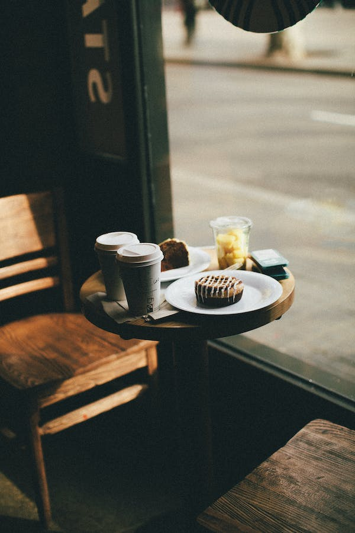
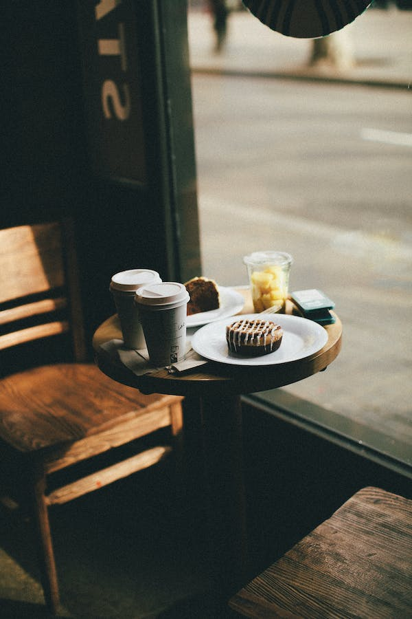

Absolutamente todo lo que ofrecemos en nuestra carta esta hecho de manera especial. Nuestro café, proveniente de fincas seleccionadas, tostado por nosotros mismos y servido en bebidas calientes o frías por nuestros baristas certificados internacionalmente por la SCA (Speciality Coffee Association). Ademas, toda la carta desarrollada por nuestra Chef, mantiene la misma idea detrás: Encontramos los mejores ingredientes para realizar esas recetas que hemos soñado, preparado y perfeccionado para poder dejar lo mas rico pero tambien aquello que es único. Estamos en cada proceso de preparación sobre todo lo que ofrecemos.
Existen grandes diferencias entre el café y aquello a lo que nos dedicamos: el café de especialidad. El café de especialidad es todo aquel que supera los 80 puntos de catación y está libre de defectos. Para conseguir un café de especialidad todo tiene que empezar desde el momento cero: el origen del café, la selección y plantación de una variedad en particular cultivada en una región específica del mundo. Luego el grano seleccionado debe pasar por unos puntos y procesos que juntos harán que el café producido se pueda clasificar como café de especialidad. Estos procesos tienen que ver con el tostado artesanal y la preparación en manos de baristas especializados. El resultado: aroma, sabor, personalidad y carácter distintivo que transforman el paladar del consumidor.
 
